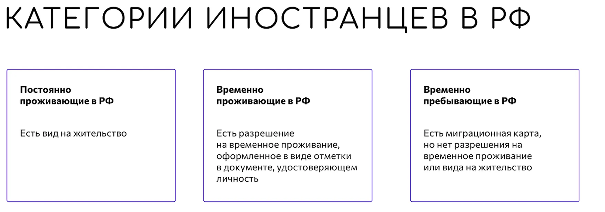
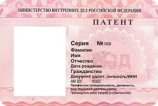
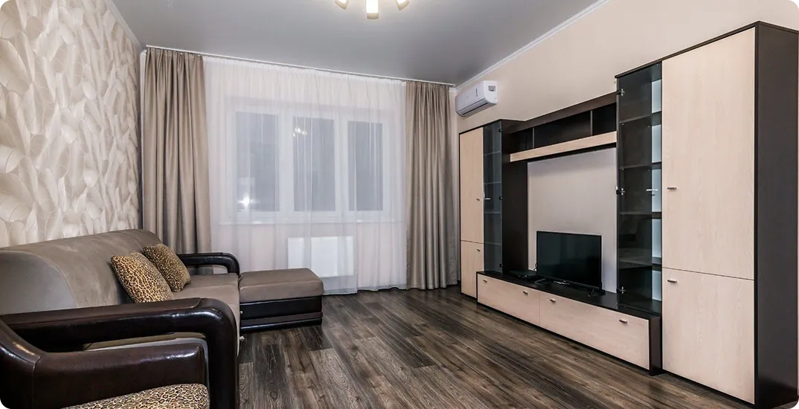

Навигация по странице:
Права, свободы и обязанности
Согласно Конституции РФ, иностранцы наделены теми же правами, что и граждане России, за исключением отдельных случаев, установленных федеральным законом или международным договором. Иностранные граждане, которые находятся в РФ, делятся на три категории:
Права и свободы
- На жизнь, неприкосновенность частной жизни, личную семейную тайну, защиту своей чести.
- На свободу и личную неприкосновенность.
- На свободу передвижения по территории РФ, выбор места пребывания и жительства.
- На свободу совести и вероисповедания.
- На доступ к культурным ценностям, а также на участие в культурной жизни и пользование учреждениями культуры.
- На обращение в суд и другие государственные органы для защиты, принадлежащих иностранцам личных, имущественных, семейных и иных прав.
- На заключение и расторжение брака с гражданами РФ и другими лицами в соответствии с законодательством РФ.
- На политическое убежище в соответствии с общепризнанными нормами международного права.
- На участие в трудовых отношениях.
- На имущество и право собственности на него.
- На возможность наследовать и завещать имущество.
- На предпринимательскую и любую иную не запрещенную законом деятельность.
- На создание юридических лиц самостоятельно или совместно с другими гражданами и юридическими лицами.
- На совершение любых, не противоречащих закону сделок и участие в обязательствах, а также на иные имущественные и личные неимущественные права.
Особенности трудовых прав. Для чего оформлять патент и разрешение на работу
Работать в России могут только совершеннолетние иностранцы, которые оформили разрешение на работу или патент. Разрешение на работу нужно тем, у кого есть виза, а патент тем, у кого ее нет.
Из этого правила, однако, есть исключения, согласно части 4 статьи 13 Федерального закона от 25.07. 2002 г. «О правовом положении иностранных граждан в Российской Федерации» (Федеральный закон «О правовом положении иностранных граждан в РФ»).
Ни патент, ни разрешение на работу не нужны гражданам Кыргызстана, Казахстана, Беларуси и Армении, так как эти страны входят в общий Евразийский экономический союз вместе с Россией.
Патент необходим гражданам стран, кому для пребывания в России не нужна виза, например: Таджикистан, Азербайджан, Узбекистан, Абхазия и даже Македония, ЮАР, Аргентина и др.
Для оформления патента нужно встать на миграционный учет по месту пребывания, сделать нотариально заверенный перевод паспорта, пройти медосмотр, подтвердить базовые знания русского языка, сделать фото и пройти процедуру дактилоскопии. И патент, и разрешение на работу выдаются в миграционных подразделениях МВД. Подробнее об этом можно узнать здесь: «О разрешении на работу и патент».
Иностранный гражданин, который временно пребывает в России, может устроиться на работу только в том регионе, где был выдан патент и только по специальности, которая в нем указана. Также с разрешением на временное проживание позволяется работать только в том регионе, где был выдан документ.
Вид на жительство дает право на работу в любом регионе России, а также обеспечивает владельца дополнительными социальными гарантиями, например: оплата больничного листа, получение пособий на детей, пенсионные выплаты, пособие по безработице, бесплатная медицинская помощь, право на налоговые вычеты, бесплатные места в детских садах и школах и льготный проезд в общественном транспорте для отдельных категорий граждан.
Иностранцам, которые получили разрешение на временное проживание или вид на жительство, оформление патента или разрешения на работу не требуется.
Также вышеуказанные правила не распространяются:
На участников государственной программы по оказанию содействия добровольного переселения в РФ соотечественников, которые проживают за рубежом, и членов их семей, переселяющихся совместно с ними.
На обучающихся в России в профессиональных образовательных организациях или организациях высшего образования, и работающих на каникулах или в свободное от учебы время.
На имеющих статус беженца или получивших временное убежище на территории России.
Иностранные граждане при получении разрешений на работу в соответствии со статьями 13.2 и 13.5 настоящего Федерального закона подлежат обязательной государственной дактилоскопической регистрации и фотографированию.
РВП И ВНЖ. Что это такое?
РВП — разрешение на временное проживание.
Это отметка в заграничном паспорте иностранного гражданина, которая дает право три года жить и работать в России. Это право необходимо подтверждать каждый год. Когда трехлетний срок истечет, необходимо подать документы на ВНЖ или новое РВП.
ВНЖ — вид на жительство.
Документ дающий иностранцу право жить в России и беспрепятственно въезжать и выезжать из нее. Получение ВНЖ — важная ступень перед оформлением гражданства. Важно помнить, что этот документ также необходимо подтверждать справкой о доходах каждый год.
Больше информации о РВП и ВНЖ:
Виды профессиональной деятельности, запрещенные для мигрантов
- Находиться на муниципальной службе.
- Занимать должность капитана, старшего помощника капитана, старшего механика и радиоспециалиста в составе экипажа судна под Государственным флагом РФ.
- Быть членом экипажа военного корабля РФ или другого судна, используемого в некоммерческих целях.
- Быть командиром экспериментального воздушного судна.
- Быть принятым на работу на объекты и в организации, деятельность которых связана с обеспечением безопасности РФ.
- Быть нотариусом или патентным поверенным.
- Занимать должность в государственных судебно-экспертных учреждениях.
Права на медицинскую помощь
Иностранные граждане в России имеют право на неотложную медицинскую помощь, и на другие медицинские услуги при наличии полиса обязательного или добровольного страхования.
Полис обязательного страхования (ОМС) могут получить граждане Евразийского экономического союза (ЕАЭС), а также временно и постоянно проживающие в РФ иностранцы и беженцы после официального трудоустройства. Такой вид страхования дает доступ к перечню бесплатных медицинских услуг, которые доступны и россиянам.
Полис добровольного страхования (ДМС) должен быть оформлен у каждого иностранца при въезде в Россию, включая детей. Услуги по такому виду страхования, как правило, включают неотложную медицинскую помощь и ряд других медицинских услуг, в том числе посещение частных клиник.
Чтобы избежать штрафа, рекомендуется оформить полис добровольного медицинского страхования (ДМС) в первый день пребывания в России или до въезда в страну.
Обратите внимание, что такой полис должен действовать на всей территории России, а сумма страхования должна быть не менее 100 000 рублей. Больше полезной информации здесь: ОМС и ДМС для иностранца
Права на покупку или аренду жилья
Иностранные граждане имеют право на покупку или аренду квартир и загородных участков, но стоит помнить, что покупка любого жилья в России не дает право подать заявление на получение разрешения на временное проживание или вида на жительство. Жилье в собственности не способствует ускорению получения вышеперечисленных документов.
В правах мигрантов на частную собственность в России есть несколько исключений:
- Нельзя владеть земельными участками на приграничных территориях РФ.
- Земельные участки в государственной или муниципальной собственности предоставляются иностранцам только за плату.
- Земельные участки сельскохозяйственного назначения могут быть только арендованы.
Обязанности мигрантов
- Заполнить миграционную карту при въезде и сдать должностному лицу на выезде с территории РФ.
- Соблюдать правила миграционного учета, а именно:
- иметь действительные документы, которые подтверждают статус и проживание, то есть российское удостоверение личности или разрешение на временное или постоянное проживание;
- обращаться в миграционный орган для регистрации по месту пребывания с документами, которые подтверждают статус и проживание в стране;
- проходить миграционный учет в месте пребывания, даже если вы временно находитесь в другом городе.
- Выехать из РФ по истечении и по сокращению срока, установленного для законного пребывания на территории страны и при аннулировании РВП/ВНЖ (разрешение на временное проживание/вид на жительство).
- В течение двух месяцев по истечении года со дня получения РВП подать уведомление о его подтверждении с приложением документа о размерах и источнике дохода за указанный год. При наличии уважительных причин, например, болезнь или смерть родственника, этот срок может увеличиться до 6 месяцев.
- Вовремя подавать заявление о замене ВНЖ. При достижении возраста 14, 20 и 45 лет, а также при смене фамилии или если документ пришел в негодность.
- В течение двух месяцев, или шести, при наличии уважительных причин, по истечении года со дня получения ВНЖ подтверждать свое постоянное проживание в России.
Подробнее о правах, свободах и обязанностях граждан можно узнать здесь: Конституция России

Административные правонарушения
Неожиданной и неприятной ситуацией для мигранта в России может оказаться необходимость выплаты штрафа за административные правонарушения или угроза депортации. Несмотря на то, что это звучит угрожающе, все не так страшно для иностранного гражданина в России, который знает свои права и соблюдает определенные правила.
Выдворение и депортация — в чем разница
Важно знать, что в законодательстве РФ, помимо депортации, существует также и такое понятие, как «выдворение». Отличаются они следующим:
Выдворение может быть назначено только на основании постановления суда.
Для депортации не требуется составления протокола, а сам вопрос о депортации решается начальником органа по вопросам миграции, а не судом.
Возможные причины депортации
- У вас нет медицинской страховки.
- Вы не встали на миграционный учет или на продление регистрации.
- Вы работаете незаконно.
- Вы не подали уведомление о проживании в России по РВП и ВНЖ.
- Вы использовали подложные документы или сообщали недостоверные сведения.
- Вы нарушили сроки пребывания в РФ.
- Ваше нахождение в РФ сочли нежелательным.
Принять решение о нежелательности пребывания иностранного гражданина в России может целый ряд государственных органов: МВД, ФСБ, МинЮст и Роспотребнадзор. Такое решение может быть принято в случае, если иностранный гражданин:
- Является носителем следующих заболеваний: туберкулез, венерические заболевания или ВИЧ.
- Осужден по приговору суда за преступление в РФ.
- Опасен для общественного порядка и безопасности России или связан с экстремизмом и терроризмом.
Отмена нежелательности пребывания более длительна по времени в отличии от запрета на въезд и выдворения, подразумевает большее количество этапов, посещаемых инстанций и требует серьезного подхода к подготовке необходимой документации.
Если закон предусматривает сокращение сроков нахождения в РФ, то человек обязуется покинуть пределы страны в течение 3 дней. Во всех остальных случаях покинуть Россию нужно в течение 15 дней.
Возможные причины выдворения
- Действия, которые противоречат государственной безопасности России.
- Множественные нарушения миграционного законодательства.
- Нарушения общественного порядка.
- Нарушения правил пересечения государственной границы.
- Административное правонарушение.
Как избежать депортации и выдворения
Если вы ответственно относитесь к документам, которые подтверждают легальность пребывания в России, своевременно продлеваете визы, соблюдаете сроки безвизового въезда, вовремя продлеваете вид на жительство и не нарушаете российское законодательство, то депортация и выдворение из страны вам не грозят.
Решение о депортации может быть обжаловано в течение трех месяцев после того, как о нем стало известно. Если дело дошло до суда и принято решение о принудительной высылке из РФ, то на обжалование отводится 10 дней.
Избежать депортации можно в том случае, если правонарушение совершено мигрантом, у которого в РФ проживают близкие родственники, супруг(а) или малолетние дети. Если иностранец является студентом очной формы обучения вуза или образовательного учреждения. Если ему необходима медицинская помощь на территории РФ.
Также депортация не применяется к иностранцам, которые нарушили закон впервые при наличии постоянного места работы, недвижимости в РФ и так далее.
Важно помнить и о том, что решение о возможности депортации выносится на основании обстоятельств совершения правонарушения и с учетом характеристики личности. Поэтому, если вы видите, что попадаете под один из этих пунктов, — пользуйтесь этим в суде.
Штрафы за административные правонарушения
Существует три вида административных нарушений, за которые иностранным гражданам могут быть назначены штрафы на территории РФ:
Также есть административные нарушения, которые распространяются не только на россиян, но и на иностранцев. К таким, например, относится несоблюдение правил дорожного движения как в качестве водителя, так и пешехода. Важно понимать, что любые дважды повторяющиеся административные нарушения могут обернуться для иностранца неприятными последствиями.
Помните, что, соблюдая правила, вы можете избежать штрафов. Кроме того, вы всегда можете воспользоваться множеством бесплатных правовых сервисов для мигрантов в России, где вам ответят на все вопросы и помогут разобраться в сложных ситуациях.
Сервис «Госуслуги»
Чтобы облегчить оформление документов, которые необходимы для миграции в Россию и для комфортной жизни здесь, воспользуйтесь онлайн-приложениями и услугами. Они прочно вошли в жизнь россиян и помогают в решении множества бюрократических и бытовых вопросов. В онлайн-режиме успешно работают приложения банков, магазинов, маркетплейсов и служб доставок.
Наиболее популярный в России интернет-ресурс для решения вопросов с документами и различными актуальными проблемами — это портал «Госуслуги».
Здесь можно оформить документы, получить выписки и всевозможные справки в электронном виде, а также запросить актуальную юридическую информацию.
Чем полезны «Госуслуги» иностранцам?
Иностранные граждане пользуются порталом «Госуслуги» с 2010 г. Самые популярные услуги и сервисы для иностранцев на портале — это:
- Консультация по трудовому праву.
- Миграционный учет.
- Получение права на управление транспортным средством.
- Обратная связь по бесплатному горячему питанию учащихся младших классов.
- Запись на прием к врачу.
- Информирование о предоставлении социальной помощи.
- Жалоба на решение контрольных органов.
- Выдача пропусков в пограничную зону.
- Выдача справки об отсутствии судимости.
Как зарегистрироваться на «Госуслугах»?
Для регистрации и получения государственных услуг достаточно иметь мобильный телефон и электронную почту. Зарегистрировать учетную запись на портале «Госуслуги» можно несколькими способами:
Если у вас есть паспорт гражданина РФ.
- Если у вас есть паспорт гражданина РФ, вы можете быстро создать учетную запись, используя сайт или приложение одного из партнерских банков портала: Список банков-партнеров. По данным, которые есть в системе банка, вас автоматически зарегистрируют на портале, этот процесс может занять от 10 минут до 3 дней.
- Прежде чем использовать этот способ, убедитесь, что вы являетесь клиентом одного из банков-партнеров «Госуслуг».
- Также при наличии паспорта гражданина РФ вы можете зарегистрироваться лично в центре обслуживания. Для этого вам нужно прийти с паспортом и СНИЛС в ближайший центр обслуживания и сообщить специалисту о желании авторизоваться на портале «Госуслуги». Как правило, процедура создания личного кабинета занимает от 15 минут.
Если у вас нет паспорта гражданина РФ.
Если паспорта гражданина РФ у вас нет, но есть СНИЛС, вам необходимо приобрести российский номер телефона и пройти стандартную процедуру регистрации в ближайшем центре обслуживания, имея при себе иностранный паспорт и СНИЛС.
После регистрации вам придет ссылка на электронную почту, с помощью которой вы сможете подтвердить свою личность и пользоваться услугами портала.
После успешной регистрации пользоваться полным спектром возможностей на портале «Госуслуги» вам поможет онлайн-робот «Макс», который ответит на все ваши вопросы и быстро решит проблему.
Получить СНИЛС (страховой номер индивидуального лицевого счета) можно через работодателя. Если вы еще не устроены на работу официально, оформить документ можно в отделении клиентской службы пенсионного фонда России по месту временной или постоянной регистрации.
Как заполнять формы и документы
Для въезда и пребывания на территории России вам понадобятся такие документы, как паспорт, виза (если между вашей родиной и Россией действует визовый режим), миграционная карта, медицинская страховка и уведомление о прибытии иностранного гражданина, которое оформляется тем, кто предоставляет вам жилье на время пребывания в стране, например, администрацией гостиницы, арендодателем или работодателем.
Миграционная карта
Одним из самых важных документов для иностранного гражданина является миграционная карта. Она подтверждает законность и срок пребывания в России и понадобится для того, чтобы встать на миграционный учет, получить патент или разрешение на работу, а также, чтобы оформить РВП и ВНЖ.
При въезде в РФ бланк миграционной карты необходимо получить у сотрудника пограничной службы на паспортном контроле.
При въезде в РФ бланк миграционной карты необходимо получить у сотрудника пограничной службы на паспортном контроле.
Заполнить миграционную карту несложно, но очень важно сделать это внимательно и правильно. Анкета миграционной карты состоит из части А и части Б. Часть А остается у пограничника при въезде в РФ, а часть Б — у иностранца.
Заполнять документ желательно на русском языке, но можно и латинскими буквами.
Разберем все пункты необходимые для заполнения:


Миграционная карта не нужна гражданам Беларуси, а также гражданам Казахстана, Киргизии и Армении, если они приезжают по заграничному паспорту менее чем на 30 дней.